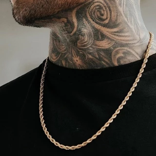
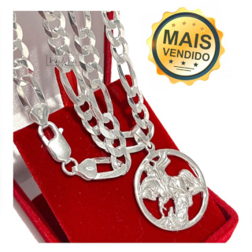

o
BRINCOS
Estilo pessoal: O brinco de prata pode adicionar um toque único ao seu estilo, mostrando sua individualidade e personalidade.
Expressão de identidade: Para algumas pessoas, usar brincos é uma forma de expressar sua identidade, seja cultural, de gênero ou de subcultura.
Versatilidade: A prata é uma cor neutra e versátil que combina com uma variedade de roupas e estilos, permitindo que você use o brinco em várias ocasiões.
Elegância discreta: O brinco de prata pode adicionar um toque de elegância discreta ao seu visual sem ser muito chamativo.
Afirmação da moda: À medida que as tendências de moda evoluem, o uso de brincos por homens tem se tornado cada vez mais comum e aceito, fazendo parte de uma afirmação de moda contemporânea.
Adaptação ao estilo de vida moderno: Hoje em dia, a moda é cada vez mais inclusiva e diversificada, permitindo que as pessoas explorem diferentes formas de se expressar através da roupa e dos acessórios.
CORRENTES
Homens podem optar por usar correntes por uma variedade de razões. Aqui estão algumas delas:
Expressão pessoal: Assim como qualquer outro acessório de moda, correntes podem ser uma forma de expressão pessoal. Elas podem complementar o estilo de alguém, adicionando um toque único ao visual.
Tendências da moda: Em determinados momentos, as correntes podem estar em alta na moda masculina, seja por influência de celebridades, designers ou influenciadores digitais. Muitos homens escolhem seguir essas tendências para se manterem atualizados
Acessório funcional: Além de seu aspecto estético, algumas correntes também podem ter um propósito funcional. Por exemplo, correntes com pingentes podem servir como suporte para chaves, carteiras ou outros objetos pequenos, tornando-as práticas além de estilosas.
 